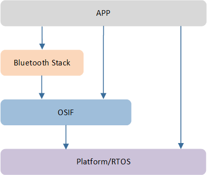
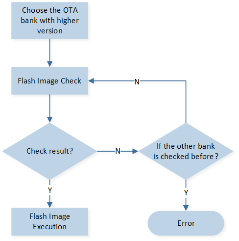
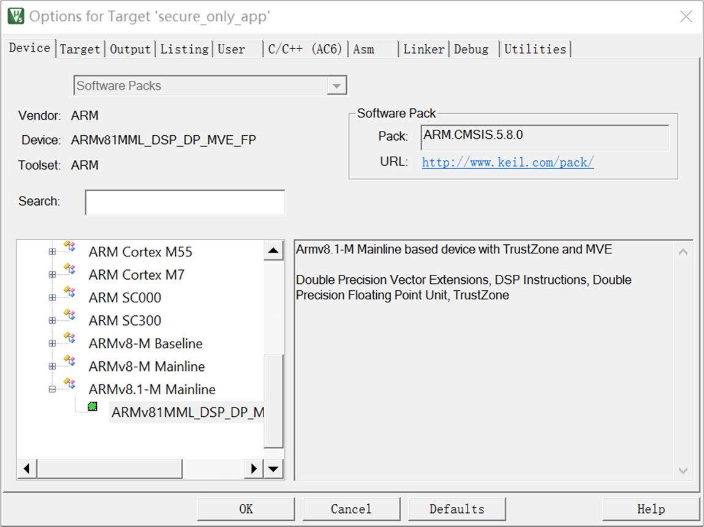
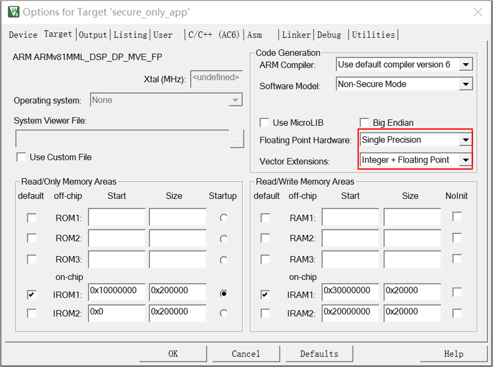
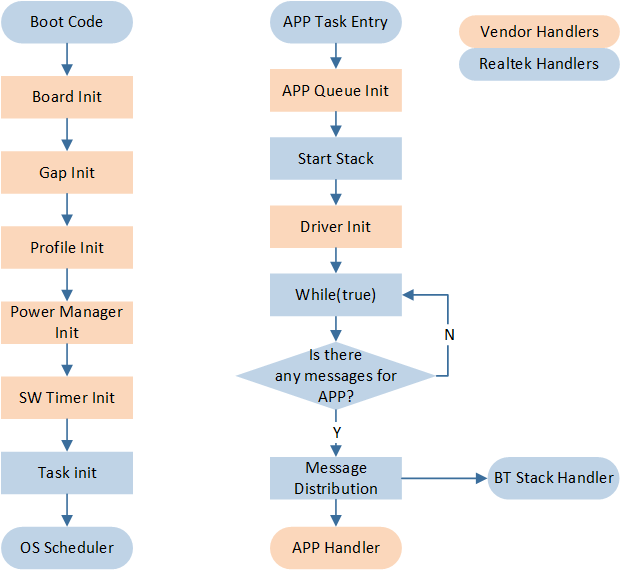

Platform Overview
The SDK provides a set of example applications for developers to test and verify their setup on their development kit. After completing these tests, developers can use these examples as a foundation for developing their own applications.
To get started with the SDK, please refer to Quick Start. Developers should first familiarize themselves with this guide.
Hardware Architecture
The CPU of RTL87x2G is Real_M300V, which is equivalent to ARM Cortex-M55. The RTL87x2G Hardware Block consists of the following parts:
Rich peripherals
Power Management Unit
Clock Management Unit
RF module

RTL87x2G Hardware Block
Software Architecture
System Architecture
As shown in RTL87x2G Software Architecture, software architecture consists of several major components:
Platform: Includes OTA, Flash, etc.
Peripheral driver: Provides application layer access to the interface of RTL87x2G peripherals.
OSIF: Abstraction layer for real-time operating systems.
GAP: Abstraction layer through which user applications communicate with the BLE stack.

RTL87x2G Software Architecture
Operating System
RTL87x2G supports multiple Real-Time Operating Systems, with the default being: FreeRTOS. The version used is FreeRTOS V10.4.4, and it operates from ROM, comprising the following modules:
Task Management
Queue Management
Interrupt Management
Resource Management
Memory Management
Time Management
OS Interfaces
As illustrated in OSIF Overview, the OSIF layer provides a unified interface by encapsulating specific RTOS interfaces. This allows developers to implement custom RTOS solutions based on the OSIF layer without needing to modify the upper-level software. Therefore, if an APP needs to run on different RTOS, it is recommended to use the OSIF interface rather than directly accessing specific RTOS interfaces.

OSIF Overview
Task and Priority
The system has created several tasks including timer task, idle task, and flash task. Additionally, the Bluetooth protocol stack will create a Bluetooth Controller task and a Bluetooth Host task. According to the application requirements, one or more tasks can be created. Setting the priority of the application tasks between 1 to 4 is recommended.
Task |
Description |
Priority |
|---|---|---|
Timer |
Implement software timer required by FreeRTOS |
6 |
Bluetooth Controller |
Implement BT stack protocols below HCI |
6 |
Bluetooth Host |
Implement BT stack protocols above HCI |
5 |
App |
Handles user application requirements |
1~4 |
Flash |
Flash suspend operation and FTL garbage collect |
1 |
Idle |
Runs background task including DLPS |
0 |
Note
Multiple APP tasks can be created, and memory resources will be then allocated.
Idle task and timer task are provided by FreeRTOS.
Tasks have been configured as preemptive based on their priority.
Additionally, hardware interrupt service routines (ISR) are implemented by the vendor as well.
TrustZone
TrustZone is the cornerstone of the ARMv8-M processor. It provides hardware access control for code, memory, and peripherals while meeting the needs of embedded applications: real-time responsiveness, minimal switching overhead, limited on-chip resources, and ease of software development.
ARMv8-M adds an additional processor operating state: secure and non-secure execution states. These security states are orthogonal to the existing thread and process modes, allowing the processor to switch between secure and non-secure modes.

TrustZone
TrustZone has the following features:
Allows users to partition memory into secure and non-secure regions.
Supports blocking the debugging of secure code/data when unauthenticated.
NVIC, MPU, SYSTICK, core control registers, etc. are also divided into two regions, allowing secure and non-secure code to independently access their respective resources.
Both the secure and non-secure regions have their own MSP and PSP stack pointers.
Introduces the concept of Secure Gateway, through which non-secure code can access specific secure code. This is the only way for non-secure code to access secure code.
Provides a Stack Limit Checking function to detect stack overflow cases. In the ARMv8.1-M architecture, each stack pointer has a corresponding stack limit register.
The roles of the SAU (Security Attribution Unit) and IDAU (Implementation Defined Attribution Unit) are to partition the memory space into secure and non-secure regions. Instructions issued by the CPU are evaluated by the SAU to determine whether they adhere to security rules, while instructions from other bus masters, such as DMA, GPU, USB, etc., are evaluated by the IDAU for compliance with security rules. If a security rule is violated, such as non-secure code accessing a secure region, it will trigger a secure fault or a hard fault.
The following is SAU's default secure and non-secure divisions. Taking Single Bank (one of the OTA upgrade methods) as an example, a total of 7 Non-Secure or Non-Secure Callable areas are set:
Areas |
Description |
|---|---|
Region0 |
Non-Secure Callable area in ROM, which stores APIs called by Non-Secure programs |
Region1, 2 |
Part of ROM, ITCM1, DTCM0 |
Region3 |
Data SRAM, Buffer SRAM, and SOCV config and OEM config at the beginning of Flash |
Region4, 5 |
Flash area |
Region6 |
PSRAM, Peripheral and other areas |
Note
TrustZone is not enabled by default in the SDK, and all code is executed in the secure area. If needing to maintain an additional secure app to enable TrustZone, refer to trustzone_demo: rtl87x2g_sdk_xxxx\samples\trustzone_demo in the SDK.
Boot Flow
When the system powers on or resets, the boot flow will be executed. The boot flow includes:
eFuse validation
Security control according to eFuse value
Flash image check and execute
The eFuse verification determines whether to enable secure boot. If secure boot is enabled, image authentication will involve signature, CMAC, and secure version verification.

Boot Flow
In Boot Flow, 'Flash Image Check and Execute' means checking all kinds of flash images and executing them. The process includes:
Check OEM Data (Flash layout is included in this file)
Check if a valid upgraded image exists in Flash
Check OTA Bank Header Files
Check every flash image in OTA Bank
Execute image
Flash Image Check and Execution demonstrates the process above. The image check method is SHA256 integrity check (disable secure boot) or signature verification (enable secure boot). The order of the flash image execution is: Boot Patch, BT Stack Patch, Secure APP, System Patch, BT Host, APP.

Flash Image Check and Execution
In the Dual Bank Boot Flow, the 'Dual Bank Process' pertains to the image upgrade procedure that supports the Bank switching scheme. When upgrading from an older version to a newer version, both Bank0 and Bank1 will contain images. During the startup process, the OTA Header with the higher version number is validated first. If the version numbers are the same, Bank0 is validated first. If the validation and decryption are successful, the images in that Bank are executed. If the validation fails, the OTA Header with the lower version number is checked next.

Dual Bank Boot Flow
Application
SDK Directory
└── SDK
├── bin Binary files for user application to link
├── bsp Board level and hardware related files
├── doc SDK documents
├── include Header files which provide API definitions export from ROM
├── samples Sample projects that can be used directly
├── subsys Upper layer and hardware-independent software protocol
└── tools Toolchain
Sample Projects
To assist in creating applications, the SDK includes numerous example projects, such as ble_peripheral and other BLE-related examples. By studying these example projects, developers can easily familiarize themselves with the SDK. All example projects are pre-configured and the memory layout has been specifically divided according to the RTL87x2G SOC. For detailed memory layout information, please refer to Memory.
Taking the ble_peripheral application as an example below, it shows how to start developing the customized user application using the sample project.

The ble_peripheral Sample Project
Source files in the ble_peripheral project are currently categorized into several groups as below:
Device directory: Includes startup code
CMSIS directory: Includes CMSIS header files
CMSE Library: Non-secure callable library
Lib directory: Includes all binary symbol files that the user application is built on
Peripheral directory: Includes all peripheral drivers and module code used by the application
Profile directory: Includes BLE profiles or services used by the sample application
APP directory: Includes the ble_peripheral user application implementation
The RTL87x2G MCU is based on the ARMv8.1 architecture, supports the MVE instruction set, and can efficiently handle single-precision integer and floating-point operations. The lib and sample application projects released in the default SDK all use the following devices.
{kind=link}

APP Project Device Select
{kind=link}

MCU APP Supports Single Precision Integer and Floating Point MVE Instructions
The common files in sample applications are explained as follows:
File name |
Description |
|---|---|
rom_uuid.h |
UUID header files provided by SDK to identify the ROM and no change needed |
ROM_NS.lib |
ROM symbol library file used by user application to link any ROM symbols |
gap_utils.lib |
GAP library file to implement BLE functions |
startup_rtl.c |
C file for RTL87x2G application startup |
system_rtl.c |
C file of RTL87x2G application system |
board.h |
Header file to configure pin and DLPS settings |
flash_map.h |
Flash layout file which is generated by Flashmap Generate Tool |
mem_config.h |
Memory Configuration file |
Sample projects may be updated alongside the SDK. To make better use of the latest sample code, it is recommended to organize any new user code in a modular fashion. For detailed information about each sample project, please refer to the corresponding user manual.
Application Process Flow

APP Flow
Action |
Description |
|---|---|
Board Init |
Contains initialization of pinmux settings and pad settings |
Gap Init |
Contains initialization of GAP related parameters |
Profile Init |
Contains initialization of BLE profiles |
Power Manager Init |
Contains initialization of power management related |
SW Timer Init |
Contains initialization of software timers |
APP Queue Init |
Contains initialization of app queue |
Driver Init |
Contains initialization of peripherals |
The system is initialized in the main() function, including the initialization of the Board, Peripherals, BT Stack, Profile, Power, Task, and other modules.
The BT Stack, profiles, and peripheral drivers are initialized within application layer tasks, and an IO messaging mechanism is implemented. All functionalities are encapsulated into IO events, which are processed by the relevant message handlers.
BT Stack messages are similarly encapsulated into BT IO events and are processed in the same manner as peripheral events.

IO Message Handling Flowchart
MSG and Event Handling Flow
An original MSG is sent from universal Peripherals' ISR or BT Stack. The processing flow is as follows.
MSG from Peripherals is forwarded by MSG Distributor to IO MSG Handler for handling.
MSG from BT Stack is forwarded by MSG Distributor to BT State Machine. BT State Machine handles MSG and sends a BT IO MSG. MSG Distributor receives the BT IO MSG and then forwards it to IO MSG Handler for handling.
After a message is received, IO MSG Handler shall make a judgment and call the related Event Handler.
Developer programs shall:
Implement Peripheral ISR, complete preliminary processing in ISR, and package MSG to send to APP if further processing is required.
Maintain IO MSG Handler to receive and handle MSGs defined by the developer.
Implement Event Handler for the application.
GAP layer notifies the APP layer with MSG and Event mechanism, while the APP layer calls GAP layer functions by APIs.
IO MSG
Message Format
typedef struct { uint16_t type; uint16_t subtype; union { uint32_t param; void *buf; }u; }T_IO_MSG;
Message Type Definition
typedef enum { IO_MSG_TYPE_BT_STATUS, IO_MSG_TYPE_KEYSCAN, IO_MSG_TYPE_QDECODE, IO_MSG_TYPE_UART, IO_MSG_TYPE_KEYPAD, IO_MSG_TYPE_IR, IO_MSG_TYPE_GDMA, IO_MSG_TYPE_ADC, ... }T_IO_MSG_TYPE;
Message Subtype Definition
Taking T_IO_MSG_UART for example, developers can define subtypes of UART.
typedef enum { IO_MSG_UART_RX = 1, IO_MSG_UART_RX_TIMEOUT = 2, IO_MSG_UART_RX_OVERFLOW = 3, IO_MSG_UART_RX_TIMEOUT_OVERFLOW = 4, IO_MSG_UART_RX_EMPTY = 5, }T_IO_MSG_UART;
User Message Definition
Developers can expand message types and customize message subtypes if needed.
Pin Settings
Pin configuration can be set in board.h.
#define KEY_0 P4_0 #define BEEP P4_1 #define LED_0 P2_1 #define LED_1 P2_4
DLPS Settings
Please refer to Low Power Mode for details.
Memory
Memory Map
RTL87x2G MCU memory includes ROM, RAM, Cache, Flash, and eFuse. Refer to Memory for details.
Flash APIs
Flash operation APIs are listed as follows, refer to Flash for more details.
FLASH_NOR_RET_TYPE flash_nor_read_locked( uint32_t addr, uint8_t* data, uint32_t len); FLASH_NOR_RET_TYPE flash_nor_write_locked( uint32_t addr, uint8_t* data, uint32_t len); FLASH_NOR_RET_TYPE flash_nor_erase_locked( uint32_t addr, FLASH_NOR_ERASE_MODE mode); FLASH_NOR_RET_TYPE flash_nor_try_high_speed_mode(FLASH_NOR_IDX_TYPE idx, FLASH_NOR_BIT_MODE bit_mode);
FTL
FTL (Flash Transport Layer) is used as an abstraction layer for BT stack and user application to read/write data in flash. Refer to Flash for details.
eFuse
eFuse is a block of one-time programming memory which is used to store important and fixed information, such as UUID, security key, and other one-time programming configurations. A single bit of eFuse cannot be changed from 0 to 1, and there is no erase operation in eFuse, so be careful when updating eFuse. Realtek offers MPTool to update certain eFuse sections.
Interrupt
Nested Vectored Interrupt Controller (NVIC)
NVIC features
16 Real-M300V exceptions, 96 maskable interrupt channels.
8 programmable interrupt priority levels.
Support remapping of Secure and Non-secure vector tables.
Low-latency exception and interrupt handling.
Implementation of System Control Registers.
Note
The NVIC and the processor core interface are closely coupled, which enables low latency interrupt processing and efficient processing of late-arriving interrupts. All interrupts, including the core exceptions, are managed by the NVIC. The interrupt vector table is used to manage and handle different types of interrupts. It is a data structure stored in memory that contains the entry addresses of interrupt handler routines. The interrupt vector table mechanism offers the advantage of flexible handling of different interrupt types. By storing the entry addresses of the interrupt handler routines in the interrupt vector table, the system can quickly locate and call the relevant routine based on the interrupt type, improving system responsiveness and efficiency.
RTL87x2G supports two ways to update the interrupt vector table:
RamVectorTableUpdate_ext()API allows XIP code to be run in the interrupt service routine, but this will bring additional CPU overhead of 4 us entry and 3.6 us exit.RamVectorTableUpdate()API should ensure that the interrupt service routine runs RAM code without additional CPU overhead.
Note
The RTL87x2G introduces flash suspend and resume mechanisms, which must ensure that Flash is not accessed in interrupt service routines. To achieve this, a wrapper needs to be added in the interrupt. By default, it is recommended to use the RamVectorTableUpdate_ext() API to ensure system stability and compatibility. For scenarios with strict requirements on interrupt response time, the RamVectorTableUpdate() API is recommended to achieve faster interrupt response times.
Interrupt Vector Table
Exception Number |
NVIC Number |
Exception Type |
Description |
|---|---|---|---|
1 |
Reset |
Reset |
|
2 |
NMI |
Nonmaskable interrupt The WDG is linked to the NMI vector |
|
3 |
Hard Fault |
All fault conditions if the corresponding fault handler is not enabled |
|
4 |
MemManage Fault |
||
5 |
Bus Fault |
||
6 |
Usage Fault |
||
7~10 |
RSVD |
||
11 |
SVC |
Supervisor Call |
|
12 |
Debug Monitor |
Debug monitor (breakpoints, watchpoints, or external debug requests) |
|
13 |
RSVD |
||
14 |
PendSV |
Pendable Service Call |
|
15 |
SYSTICK |
System Tick Timer |
|
16 |
[0] |
System_ISR |
Interrupt CPU when system wakes up by GPIO |
17 |
[1] |
WDT |
Watchdog Timer interrupt |
18 |
[2] |
Internal use |
|
19 |
[3] |
Internal use |
|
20 |
[4] |
Zigbee_ISR |
Zigbee interrupt |
21 |
[5] |
BTMAC_ISR |
BTMAC interrupt |
22* |
[6] |
Peripheral_ISR |
See Below Table: Peripheral ISR (an extension of interrupt) |
23 |
[7] |
RSVD |
|
24 |
[8] |
RTC |
Real-Time Counter interrupt |
25 |
[9] |
GPIO_A0 |
GPIO_A0 interrupt (GPIO_A corresponds to GPIO0 in Address Map sheet) |
26 |
[10] |
GPIO_A1 |
GPIO_A1 interrupt (GPIO_A corresponds to GPIO0 in Address Map sheet) |
27 |
[11] |
GPIO_A[2:7] |
GPIO_A[2:7] interrupt (GPIO_A corresponds to GPIO0 in Address Map sheet) |
28 |
[12] |
GPIO_A[8:15] |
GPIO_A[8:15] interrupt (GPIO_A corresponds to GPIO0 in Address Map sheet) |
29 |
[13] |
GPIO_A[16:23] |
GPIO_A[16:23] interrupt (GPIO_A corresponds to GPIO0 in Address Map sheet) |
30 |
[14] |
GPIO_A[24:31] |
GPIO_A[24:31] interrupt (GPIO_A corresponds to GPIO0 in Address Map sheet) |
31 |
[15] |
GPIO_B[0:7] |
GPIO_B[0:7] interrupt (GPIO_B corresponds to GPIO1 in Address Map sheet) |
32 |
[16] |
GPIO_B[8:15] |
GPIO_B[8:15] interrupt (GPIO_B corresponds to GPIO1 in Address Map sheet) |
33 |
[17] |
GPIO_B[16:23] |
GPIO_B[16:23] interrupt (GPIO_B corresponds to GPIO1 in Address Map sheet) |
34 |
[18] |
GPIO_B[24:31] |
GPIO_B[24:31] interrupt (GPIO_B corresponds to GPIO1 in Address Map sheet) |
35 |
[19] |
DMA_Channel0 |
RTK-DMA channel 0 global interrupt |
36 |
[20] |
DMA_Channel1 |
RTK-DMA channel 1 global interrupt |
37 |
[21] |
DMA_Channel2 |
RTK-DMA channel 2 global interrupt |
38 |
[22] |
DMA_Channel3 |
RTK-DMA channel 3 global interrupt |
39 |
[23] |
DMA_Channel4 |
RTK-DMA channel 4 global interrupt |
40 |
[24] |
DMA_Channel5 |
RTK-DMA channel 5 global interrupt |
41 |
[25] |
DMA_Channel6 |
RTK-DMA channel 6 global interrupt |
42 |
[26] |
DMA_Channel7 |
RTK-DMA channel 7 global interrupt |
43 |
[27] |
DMA_Channel8 |
RTK-DMA channel 8 global interrupt |
44 |
[28] |
DMA_Channel9 |
RTK-DMA channel 9 global interrupt |
45 |
[29] |
PPE |
Pixel Process Engine interrupt |
46 |
[30] |
I2C0 |
I2C0 interrupt |
47 |
[31] |
I2C1 |
I2C1 interrupt |
48 |
[32] |
I2C2 |
I2C2 interrupt |
49 |
[33] |
I2C3 |
I2C3 interrupt |
50 |
[34] |
RTK UART0 |
normal interrupt |
51 |
[35] |
RTK UART1 |
normal UART interrupt |
52 |
[36] |
RTK UART2 |
normal UART interrupt |
53 |
[37] |
RTK UART3 |
normal UART interrupt |
54 |
[38] |
RTK UART4 |
normal UART interrupt |
55 |
[39] |
RTK UART5 |
normal UART interrupt |
56 |
[40] |
SPI 3Wire |
SPI 3Wire interrupt |
57 |
[41] |
SPI0 |
SPI0 interrupt |
58 |
[42] |
SPI1 |
SPI1 interrupt |
59 |
[43] |
SPI Slave |
SPI Slave interrupt |
60 |
[44] |
Timer_0 |
Timer interrupt |
61 |
[45] |
Timer_1 |
Timer interrupt |
62 |
[46] |
Timer_2 |
Timer interrupt |
63 |
[47] |
Timer_3 |
Timer interrupt |
64 |
[48] |
Timer_4 |
Timer interrupt |
65 |
[49] |
Timer_5 |
Timer interrupt |
66 |
[50] |
Timer_6 |
Timer interrupt |
67 |
[51] |
Timer_7 |
Timer interrupt |
68 |
[52] |
Enhanced_Timer_0 |
Enhanced timer interrupt |
69 |
[53] |
Enhanced_Timer_1 |
Enhanced timer interrupt |
70 |
[54] |
Enhanced_Timer_2 |
Enhanced timer interrupt |
71 |
[55] |
Enhanced_Timer_3 |
Enhanced timer interrupt |
72 |
[56] |
HR-ADC |
HR-ADC interrupt |
73 |
[57] |
ADC |
ADC interrupt |
74 |
[58] |
KEYSCAN |
keyscan interrupt |
75 |
[59] |
AON Q-decode |
Qdec in AON domain interrupt |
76 |
[60] |
IR |
IR module global interrupt |
77 |
[61] |
SDHC |
Secure Digital IO interrupt |
78 |
[62] |
ISO7816 |
ISO7816 (Smart Card Standards) interrupt |
79 |
[63] |
Display |
Display interrupt |
80 |
[64] |
I2S0 RX |
I2S0 RX interrupt |
81 |
[65] |
I2S0 TX |
I2S0 TX interrupt |
82 |
[66] |
I2S1 RX |
I2S1 RX interrupt |
83 |
[67] |
I2S1 TX |
I2S1 TX interrupt |
84 |
[68] |
SHA256 |
SHA256 family interrupt |
85 |
[69] |
Public key engine |
Public key engine interrupt |
86 |
[70] |
Internal use |
|
87 |
[71] |
SegCom_CTL |
SegCom_CTL interrupt |
88 |
[72] |
CAN |
CAN interrupt |
89 |
[73] |
ETHERNET |
Ethernet interrupt |
90 |
[74] |
IMDC |
IMDC interrupt |
91 |
[75] |
Internal use |
|
92 |
[76] |
Internal use |
|
93 |
[77] |
USB |
USB IP interrupt |
94 |
[78] |
USB_SUSPEND_N |
USB Suspend/Resume interrupt |
95 |
[79] |
USB_Endp_Muti_Proc |
USB_Endp_Muti_Proc interrupt |
96 |
[80] |
USB_IN_EP_0 |
USB IN End Point 0 interrupt |
97 |
[81] |
USB_IN_EP_1 |
USB IN Endpoint 1 interrupt |
98 |
[82] |
USB_IN_EP_2 |
USB IN Endpoint 2 interrupt |
99 |
[83] |
USB_IN_EP_3 |
USB IN Endpoint 3 interrupt |
100 |
[84] |
USB_IN_EP_4 |
USB IN Endpoint 4 interrupt |
101 |
[85] |
USB_IN_EP_5 |
USB IN Endpoint 5 interrupt |
102 |
[86] |
USB_OUT_EP_0 |
USB OUT Endpoint 0 interrupt |
103 |
[87] |
USB_OUT_EP_1 |
USB OUT Endpoint 1 interrupt |
104 |
[88] |
USB_OUT_EP_2 |
USB OUT Endpoint 2 interrupt |
105 |
[89] |
USB_OUT_EP_3 |
USB OUT Endpoint 3 interrupt |
106 |
[90] |
USB_OUT_EP_4 |
USB OUT Endpoint 4 interrupt |
107 |
[91] |
USB_OUT_EP_5 |
USB OUT End Point 5 interrupt |
108 |
[92] |
USB_Sof |
USB Start Of Frame interrupt |
109 |
[93] |
Internal use |
|
110 |
[94] |
Internal use |
|
111 |
[95] |
Internal use |
Exception Number |
NVIC Number |
Exception Type |
Description |
|---|---|---|---|
0 |
[6] |
SPIC0 |
SPI device (flash) Controller 0 interrupt |
1 |
[6] |
SPIC1 |
SPI device (flash) Controller 1 interrupt |
2 |
[6] |
SPIC2 |
SPI device (flash) Controller 2 interrupt |
3 |
[6] |
TRNG |
True Random Number Generator interrupt |
4 |
[6] |
LPC |
Low Power Comparator interrupt |
5 |
[6] |
SPI_PHY1 |
SPI_PHY1 interrupt |
6 |
[6] |
RSVD |
Interrupt Priority
RTL87x2G supports three fixed highest-priority levels and 8 levels of programmable priority. The priority with numbers is below:
0 > 1 > 2 > 3 > 4 > 5 > 6 > 7
Priority |
Usage |
|---|---|
-3 |
Reset Handler |
-2 |
NMI |
-1 |
Hard Fault |
0~1 |
Used for interrupts with very high real-time requirements. (Note: Interrupts of this priority will not be masked by the critical section of FreeRTOS, but the interrupt handler cannot call any FreeRTOS API) |
2~6 |
Normal ISR |
7 |
SysTick and PendSV |
Power Management
RTL87x2G supports four power modes.
CPU Active
This mode enables all features for ultimate performance. In Power active mode, if the program does not enter the idle task, the CPU remains in an active state, and the CPU clock will be in high-speed mode, with a default clock speed of 40MHz.
CPU Sleep
In Power active mode, when the system enters the idle task, the CPU goes into sleep mode, and the CPU clock will automatically slow down. If the CPU is operating at a 40MHz clock, the clock speed will reduce to 625KHz when the CPU is in sleep mode. If a PLL clock is being used, the selection of slow clock depends on the configuration of the PLL clock source.
DLPS (Deep Low Power State)
This mode offers proper low power consumption and quick exit and restore time. In DLPS mode, the content of RAM is retained.
Power Down
This mode has extremely low power consumption. However, in power down mode, the content of RAM is not retained. Exiting from Power Down mode requires a reboot process, which takes more time. Only LPC and PAD (without debounce) can wake up the Power Down mode.
RTL87x2G will enter low power mode when certain conditions are met, and it can be woken up by PAD, BT interrupt, RTC interrupt, or the expiration of the OS software timer. Refer to Low Power Mode for more details.
Debug System
Two debugging methods have been provided to debug applications. Please refer to Debug System for more details.
Use log mechanism to trace code procedures and data.
Use Keil MDK and J-Link to control running, add/delete breakpoints, access/trace memory, and so on.
See Also
Please refer to the relevant API Reference: